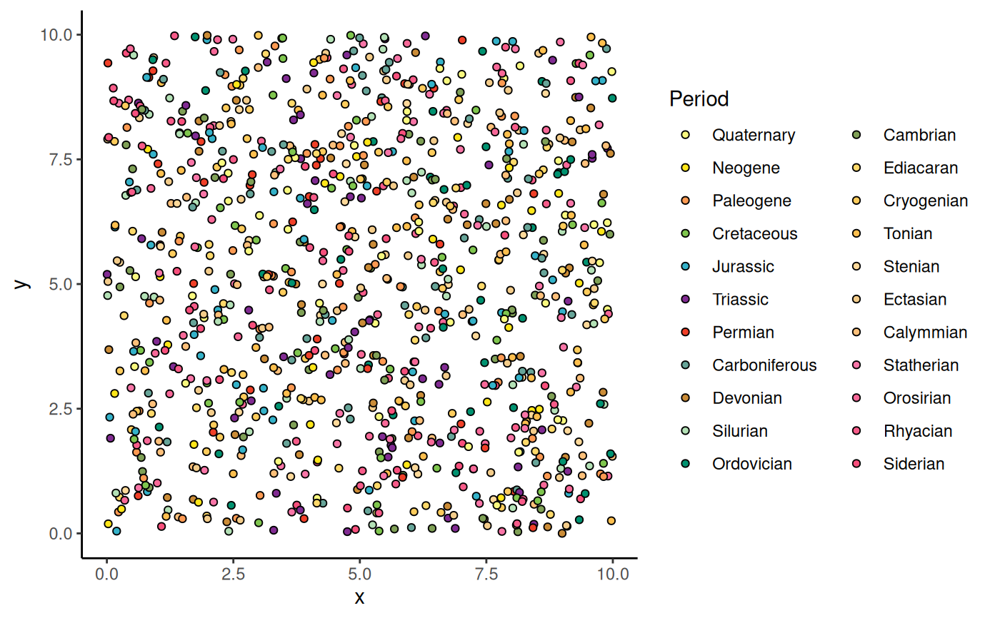

Color scales using the colors in the Geological Time Scale graphics.
Arguments
- dat
Either A) a string indicating a built-in dataframe with interval data from the ICS ("periods", "epochs", "stages", "eons", or "eras"), B) a string indicating a timescale from macrostrat (see list here: https://macrostrat.org/api/defs/timescales?all), or C) a custom data.frame of time interval boundaries (see
coord_geo()).- ...
Arguments passed on to
ggplot2::discrete_scalescale_name![[Deprecated]](figures/lifecycle-deprecated.svg) The name of the scale
that should be used for error messages associated with this scale.
The name of the scale
that should be used for error messages associated with this scale.nameThe name of the scale. Used as the axis or legend title. If
waiver(), the default, the name of the scale is taken from the first mapping used for that aesthetic. IfNULL, the legend title will be omitted.minor_breaksOne of:
NULLfor no minor breakswaiver()for the default breaks (none for discrete, one minor break between each major break for continuous)A numeric vector of positions
A function that given the limits returns a vector of minor breaks. Also accepts rlang lambda function notation. When the function has two arguments, it will be given the limits and major break positions.
labelsOne of the options below. Please note that when
labelsis a vector, it is highly recommended to also set thebreaksargument as a vector to protect against unintended mismatches.NULLfor no labelswaiver()for the default labels computed by the transformation objectA character vector giving labels (must be same length as
breaks)An expression vector (must be the same length as breaks). See ?plotmath for details.
A function that takes the breaks as input and returns labels as output. Also accepts rlang lambda function notation.
limitsOne of:
NULLto use the default scale valuesA character vector that defines possible values of the scale and their order
A function that accepts the existing (automatic) values and returns new ones. Also accepts rlang lambda function notation.
na.translateUnlike continuous scales, discrete scales can easily show missing values, and do so by default. If you want to remove missing values from a discrete scale, specify
na.translate = FALSE.na.valueIf
na.translate = TRUE, what aesthetic value should the missing values be displayed as? Does not apply to position scales whereNAis always placed at the far right.dropShould unused factor levels be omitted from the scale? The default,
TRUE, uses the levels that appear in the data;FALSEincludes the levels in the factor. Please note that to display every level in a legend, the layer should useshow.legend = TRUE.guideA function used to create a guide or its name. See
guides()for more information.callThe
callused to construct the scale for reporting messages.superThe super class to use for the constructed scale
- aesthetics
Character string or vector of character strings listing the name(s) of the aesthetic(s) that this scale works with. This can be useful, for example, to apply colour settings to the
colourandfillaesthetics at the same time, viaaesthetics = c("colour", "fill").
Examples
library(ggplot2)
df <- data.frame(
x = runif(1000, 0, 10), y = runif(1000, 0, 10),
color = sample(periods$name, 1000, TRUE), shape = 21
)
ggplot(df) +
geom_point(aes(x = x, y = y, fill = color), shape = 21) +
scale_fill_geo("periods", name = "Period") +
theme_classic()

# cut continuous variable into discrete
df <- data.frame(x = runif(1000, 0, 1000), y = runif(1000, 0, 8))
df$color <- cut(df$x, c(periods$min_age, periods$max_age[22]), periods$name)
ggplot(df) +
geom_point(aes(x = x, y = y, color = color)) +
scale_x_reverse() +
scale_color_geo("periods", name = "Period") +
coord_geo(xlim = c(1000, 0), ylim = c(0, 8)) +
theme_classic()